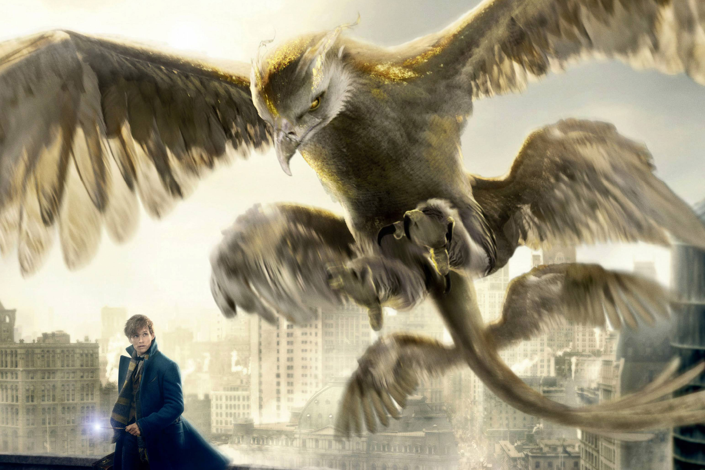

Fantastic Beasts and Where to Find Them is a 2016 fantasy film directed by David Yates and distributed by Warner Bros. Pictures. A spin-off of the Harry Potter film series, it was produced and written by J. K. Rowling, in her screenwriting debut, and inspired by her book of the same name. The film stars Eddie Redmayne as Newt Scamander with Katherine Waterston, Dan Fogler, Alison Sudol, Ezra Miller, Samantha Morton, Jon Voight, Carmen Ejogo, Ron Perlman and Colin Farrell in supporting roles. It is the first instalment in the Fantastic Beasts series, and the ninth overall in J. K. Rowling's Wizarding World, which is the franchise that began with the Harry Potter films.[6] Principal photography began at Warner Bros. Studios, Leavesden, England on 17 August 2015. Fantastic Beasts and Where to Find Them premiered in New York City on 10 November 2016 and was released worldwide on 18 November 2016 in 3D, IMAX 4K Laser and other large format cinemas. As at 27 January 2017 the film has grossed $809 million worldwide, making it the eighth highest-grossing film of 2016. The film has been nominated for five BAFTAs, including one for Outstanding British Film, and two Oscars at the 89th Academy Awards, including Best Production Design and Best Costume Design.
Fantastic Beasts and Where to Find Them is homework. No, really – the latest entry in the seemingly unstoppable Harry Potter franchise (seven novels, eight films, a two-part play that premiered earlier this year, etc.) was first alluded to in Harry Potter and the Philosopher’s Stone, nearly 20 years ago now, as a textbook to be studied at Hogwarts School of Witchcraft and Wizardry. Later, author J.K. Rowling expanded the title, to raise money for charity, into a faux primer on magical creatures, as in an Aubudon’s guide to birds, but for dragons and hippogriffs. This might be the first movie ever based on a syllabus. The Harry Potter films have conjured up billions at the box office; can you really blame Warner Bros.? The problem with this spinoff is, like homework, you’d rather be doing something else with your time. As the end credits rolled, I half-expected to be handed a multiple choice test – please identify the Niffler; which one is the Demiguise? At least the monsters, when compared with their co-stars, have some personality. Considering the Potterverse is inhabited by some of the most enduring fictional characters in recent memory, the lack of equally fantastic humans is what gives Beasts a failing grade. To be fair, this is an exercise in world-building, meant to lay the foundation for a staggering five movies in total (and considering Rowling’s textbook detailed 85 different beasts, there are plenty of creatures to come). Yet Rowling, who wrote the screenplay (her first), packs in enough plot to cover all future instalments – trying to follow along feels like cramming for a quiz. Unlike the previous Harry Potter films, which were set in present-day England, Fantastic Beasts and Where to Find Them hops back in time and boards a steamer across the ocean for 1920s New York, a city whose citizens are still recovering from the war. It’s a welcome change. Director David Yates, who helmed the last four (very good) Harry Potter films, but has way less to work with here, does a remarkable job of bringing Jazz Age New York to life; the setting is one of the film’s highlights, dripping in art-deco architecture and magical speakeasies. Arriving on Ellis Island is Newt Scamander, a “magizoologist” (basically Jane Goodall with a wand) who has come to America with only the shirt on his back and a small, leather-bound suitcase that hides an ark full of magical creatures, which are illegal in the U.S. (Redmayne plays Newt as a socially awkward young man who prefers the company of animals to his fellow wizards; the performance alternates between charming and grating.) He’s almost immediately waylaid when several beasts from his menagerie escape – they are constantly escaping; he needs better locks on that suitcase – and proceed to wreak havoc on the city. He’s arrested, and later befriends a disgraced Auror (a magic cop, for those of you not familiar with the Potterverse) named Tina Goldstein (Katherine Waterston, who seems overwhelmed by her surroundings), her telepath sister (singer Alison Sudol), and Jacob, a No-Maj (the American term for “muggle,” meaning a person who can’t use magic), played by Dan Fogler, the best non-beast in the overstuffed cast of characters, which also includes a moody teen with a secret, an orphan girl, an ambitious young senator, a brooding Auror (Colin Farrell), and, oh, Jon Voight as a cantankerous newspaper baron. And that’s not the half of them. But the movie promises fantastic beasts, and fantastic they are. Here we encounter elephants seemingly bred with giant squids; enormous rhinos crossed with whales; jungle cats that puff up like blowfish; snakes with wings that grow and shrink depending on their surroundings; enormous eagles; an invisible monkey-like creature; a Groot-like stick insect; a kleptomaniacal platypus. As Newt and his new friends chase the runaway beasts around the city, they become entwined in a variety of half-baked (and rather superfluous) subplots, ranging from the search for a child with wondrous magical abilities, an anti-witchcraft temperance society, and a shadowy figure named Gellert Grindelwald, who has the rest of the wizarding community on edge. Still, there are moments that transcend the rest of the film’s staid trappings. At one point, late at night, Newt invites Jacob down into his suitcase, which contains a seemingly infinite amount of space for his beasts to roam free. As they wander around, from desert plains to snowy fields to dark forests, and Newt introduces all his fantastic charges, Jacob can only stare, awestruck, in wonder. It reminds you of what made Harry Potter magical in the first place, and, if producers do their homework, what this new franchise could one day become. Source: http://www.theglobeandmail.com/arts/film/film-reviews/fantastic-beasts-harry-potter-spin-off-devoid-of-magic/article32900795/